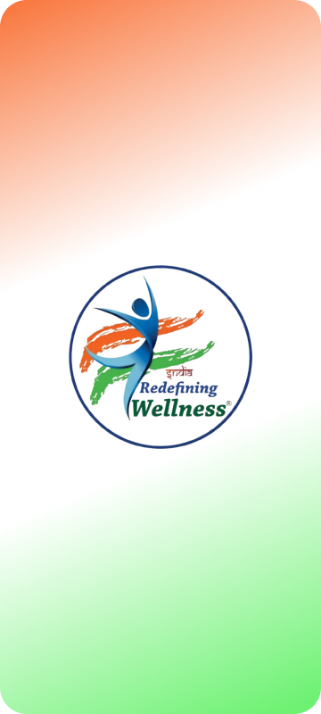
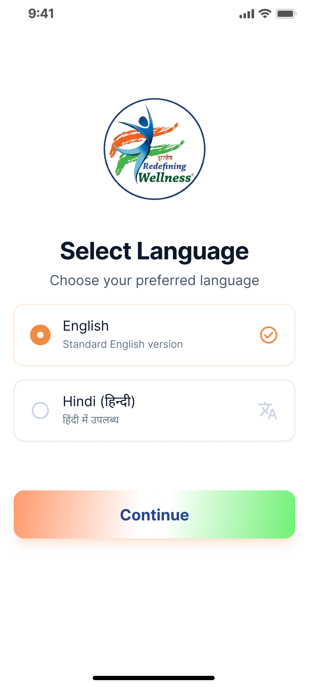
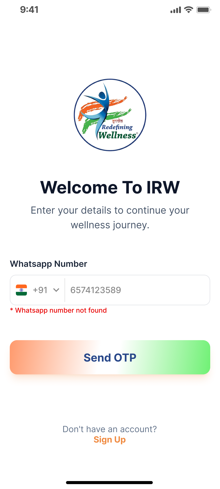
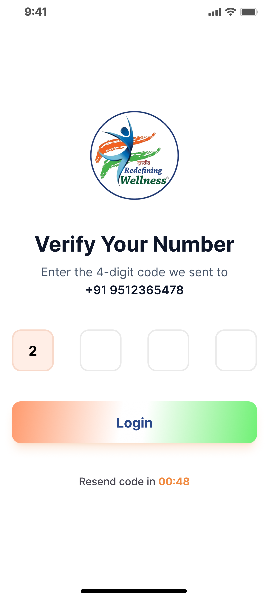
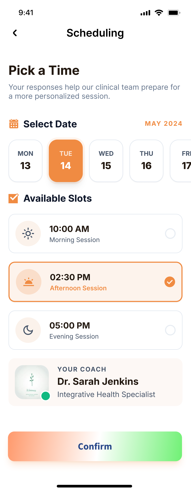
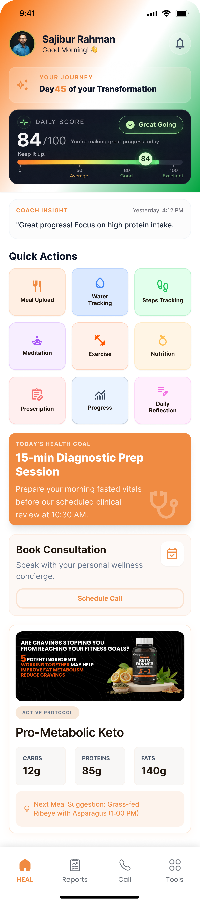
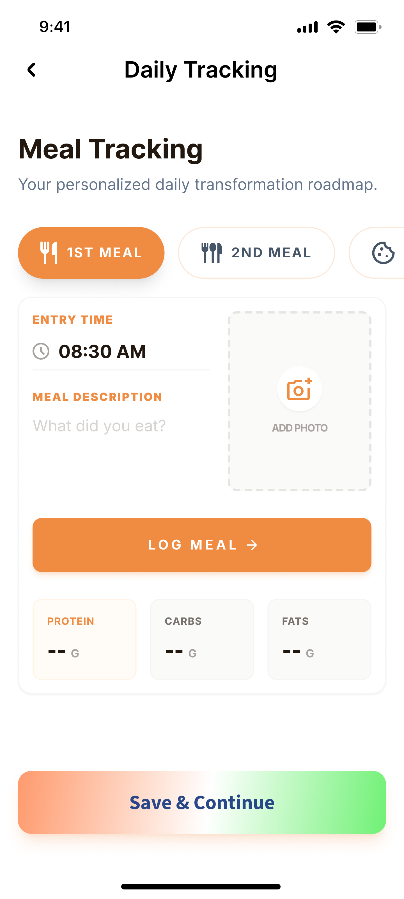
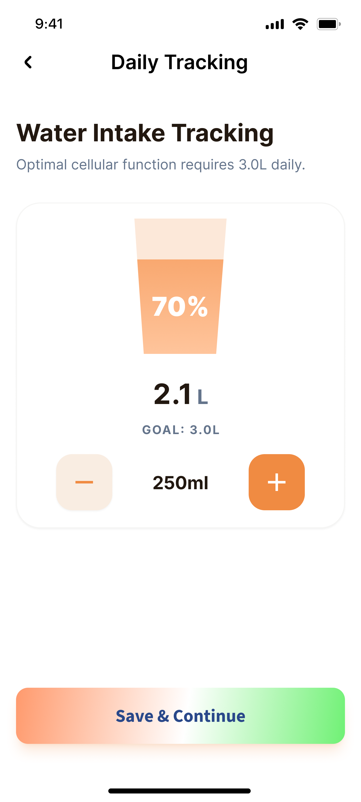
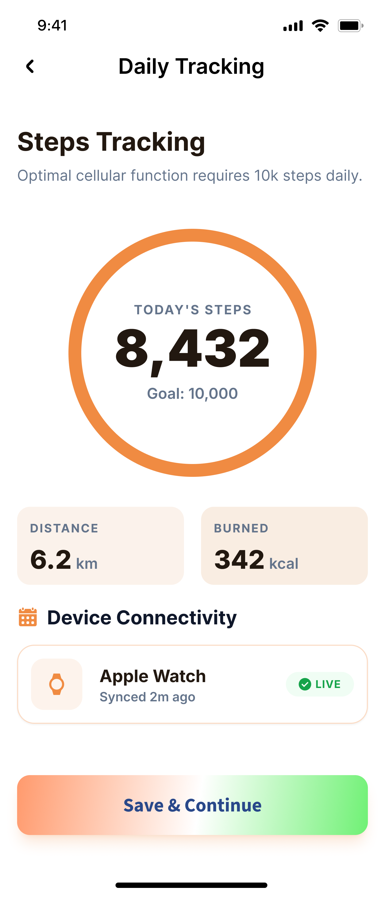
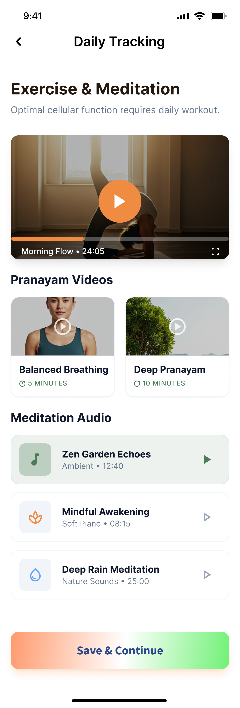

IR Wellness User Manual
Welcome to IR Wellness (India Redefining Wellness) — your guided companion for metabolic health, coaching, daily tracking, and long-term lifestyle transformation. This manual explains every major screen in simple English, with screenshots from the app design.

1. App Overview
IR Wellness has two main experiences: Seek (explore & learn) and Heal (paid coaching program with personalized protocols).
Seek (Free)
Explore wellness content, health tools, recipes, testimonials, and book a consultation.
Heal (Paid Program)
Get a coach, complete onboarding, follow your protocol, and track meals, water, steps, sleep, and more.
Health Tools
Use BMI, BMR, body fat, visceral fat, water, and steps tools anytime from Wellnesspedia / Tools.
Coaching Loop
Upload reports, schedule calls, receive prescriptions, and review daily coach insights.
2. Getting Started
When you open the app for the first time, choose your preferred language.
- Launch IR Wellness from your phone.
- On Select Language, tap English or Hindi (हिन्दी).
- Tap Continue.
- You can change language later from Profile / Settings.

3. Login & OTP Verification
Sign in securely using your WhatsApp / mobile number. No password is required.


How to log in
- Enter your registered WhatsApp number with country code (default +91).
- Tap Send OTP.
- Open WhatsApp / SMS and copy the one-time code.
- Enter the code on Verify Your Number.
- Tap Login.
- If the timer ends, wait for Resend code and request a new OTP.
4. Profile Set Up
After joining the Heal program, complete your profile so your coach can personalize your plan.


What to fill
- Upload a clear profile picture for your coach.
- Enter Full Name, Date of Birth, and Gender.
- Confirm Mobile, WhatsApp, and Email. Use “Same as mobile number?” if both numbers match.
- Add your complete residential address (city, state, country, pincode).
- Choose your Food Preference (Vegetarian, Eggetarian, Vegan, Non-Vegetarian, Jain).
- Select your Target Program (for example, Weight Loss).
- Review your assigned Wellness Coach and Assistant Coach.
- Tap Save & Continue.
5. Body Vitals & Health Metrics
Enter accurate body measurements. The app calculates your biological snapshot automatically.


Body Vitals steps
- Enter Height (feet/cm) and Weight (kgs/lbs).
- Upload a Weight Pic — this is mandatory for verification.
- Enter neck, chest, waist, hip, and thigh measurements.
- Open Guidelines for measurements if you need help measuring correctly.
- Tap Save & Continue.
What you will see next
- BMI with status (for example, Normal)
- Waist-Hip Ratio risk assessment
- Body Fat % and Lean Muscle %
- BMR and TDEE calorie estimates
- Visceral Fat level vs global benchmark
6. Medical & Blood Test Reports
Use Report Hub to upload lab PDFs, view verified reports, and track biomarker trends.
- Open Medical & Blood Test.
- Review your Last Report status (for example, Verified).
- Tap Browse Files (PDF) to upload a new blood work report.
- The app extracts key values and stores them in History.
- Use VIEW on any past month to reopen an older report.
- Check trend charts such as Blood Glucose Trend against your target.
- Tap Save & Continue.

7. Discovery Call & Scheduling
Share your current wellness status, then book a convenient slot with your coach.


Discovery Call form
- Describe your main health concerns and goals.
- Select your current energy level: Low / Medium / High.
- Rate sleep quality from 1 (Poor) to 5 (Excellent).
- Choose focus areas such as Nutrition, Mobility, Stress Management, or Gut Health.
- Tap Continue.
Scheduling
- Select an available date from the calendar strip.
- Choose a morning, afternoon, or evening slot.
- Confirm your coach details.
- Tap Confirm to lock the appointment.
8. Program Initiation & Visibility
Configure your metabolic rhythm, then follow your personalized daily protocol.


Program Initiation
- Eating Window: set start and end times for active eating hours.
- Sleep Schedule: set wind-down and wake-up times.
- Clinical Guidelines: follow hydration, morning stretch, and sunlight goals.
Program Visibility
- See your current phase (example: Phase 1 Metabolic Reset) and day progress.
- Read the latest notes from your coach.
- Tick off your Daily Prescription items (morning / lunch / evening).
- Tap Confirm after completing the day’s checklist.
9. HEAL Dashboard
Your home base for the paid journey — daily score, coach insight, quick actions, and goals.


Your Journey
Shows which day of transformation you are on (for example, Day 45).
Daily Score
A 0–100 score of today’s consistency. 80+ is Good; nearer 100 is Excellent.
Coach Insight
Short guidance from your coach based on recent activity and goals.
Quick Actions
Jump instantly to Meal, Water, Steps, Meditation, Exercise, Nutrition, Prescription, Progress, or Daily Reflection.
Today’s Health Goal
Your priority action for the day, such as a prep session before a clinical review.
Active Protocol
See current macros (carbs / proteins / fats) and the next suggested meal.
10. Daily Tracking
Log everyday habits so your coach and the app can measure real progress.
10.1 Meal Tracking
- Open Meal Tracking from Daily Tracking or Quick Actions.
- Select the meal slot (1st Meal, 2nd Meal, snack, etc.).
- Set the entry time.
- Describe what you ate and optionally Add Photo.
- Tap Log Meal to save protein / carbs / fats where available.

10.2 Water Intake Tracking
- Open Water Intake Tracking.
- Use + / – to add or remove water in 250 ml steps.
- Watch the glass fill toward your daily goal (example: 3.0 L).
- Tap Save & Continue.

10.3 Steps Tracking
- Open Steps Tracking.
- Allow Health Connect (Android) or HealthKit / Apple Watch (iOS) when prompted.
- Review today’s steps, distance, and calories burned.
- Confirm device connectivity shows LIVE / recently synced.
- Aim for your daily goal (example: 10,000 steps).

10.4 Exercise & Meditation
- Open Exercise & Meditation.
- Play guided workout / yoga videos such as Morning Flow.
- Choose short Pranayam sessions for breathing practice.
- Play meditation audio tracks for wind-down or focus.
- Tap Save & Continue after completing your session.

11. Free / Seek Features
Even before joining Heal, you can explore learning and self-assessment tools.
Seek Home
Banners, transformation stories, champions, recipes preview, and consultation CTA.
Testimonials
Read and watch real client healing journeys filtered by health concern.
Wellnesspedia
Healthy recipes, yoga/pranayam media, health disorders, and calculators.
Health Tools
Water, Steps, BMI, BMR, Body Fat, and Visceral Fat estimators.
Energy Exchange
Browse wellness program / subscription plans and complete secure checkout.
Referrals
Share your referral link/code so friends can join your wellness circle.
12. Tips, Privacy & Support
Stay consistent
Log meals, water, and reflection every day. Your Daily Score improves with consistency.
Keep data accurate
Upload clear weight photos and original PDF lab reports for faster coach review.
Enable notifications
Allow push notifications so reminders, coach messages, and appointment alerts reach you on time.
Connect health apps
Link Health Connect / Apple Health for automatic steps, sleep, and heart-rate sync.
Privacy
Your medical reports and personal details are used for coaching and care. Review Terms & Privacy inside the app drawer.
Need help?
Use in-app FAQ, WhatsApp support, or contact your assigned Wellness Coach from the Heal dashboard.
- Select language → Login with OTP
- Complete Profile Set Up (photo + preferences)
- Enter Body Vitals + upload weight pic
- Upload latest blood test PDF
- Fill Discovery Call form and schedule your session
- Set eating window & sleep schedule
- Start daily meal / water / steps / reflection tracking